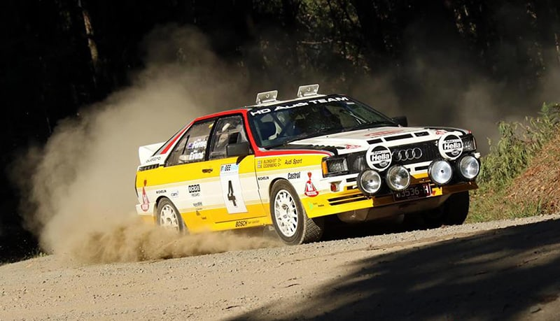
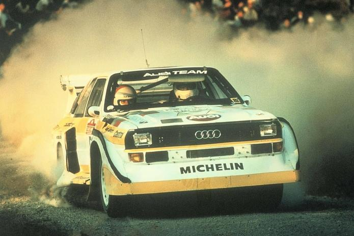
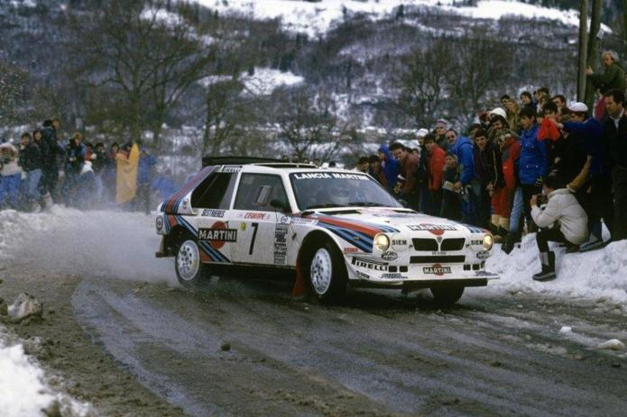
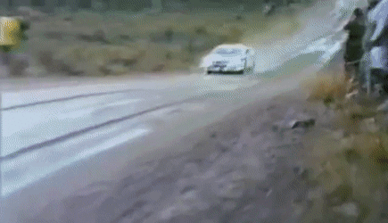

Rally Cars
History
Rally cars and rally racing has a huge history to it that spans from 1894 all the way to the present day. As this page, I'll be focusing on the history of the group B category of rally racing and rally cars. Group B was first introduced by the FIA(Federation Internationale de l'Automobile) in 1982. Compared to the other categories of rally racing, group B had fewer restrictions on technology, design and the number of cars required for homologation to compete, about 200 less than the other categories. Weight was also kept as low as possible, high-tech materials were permitted, and there were no restrictions on turbo boost, which resulted in the power output of winning cars to increase up to 500 horsepower. Group B was initially very successful group compared to the other group categories. Many manufacturers joined the premier World Rally Championship and the number of specators increased. Although, the cost of of competing quickly rose and the performance of the cars proved too much in a series of fatal crashes. As a consequence, Group B was canceled at the end of 1986 and Group A regulations became the standard for all cars until the advent of World Rally Cars in 1997. While this is a sad ending to Group B racing, we cannot ignore all the amazing cars it brought into the automotive scene. Cars like the Audi Quattro made a name for itself by winning one of the World Rally Championship's and starting the wave for four-wheel drive in rally racing. Also, cars like the Lancia Delta, the Peugot 205 T16, and the Ford Escort RS200 were famous for there performance alike.
Videos & Information about Rally Cars
Audi Quattro
Lancia Delta
Rally Clips/Gifs
Audi Quattro in Action

Group B in Action

